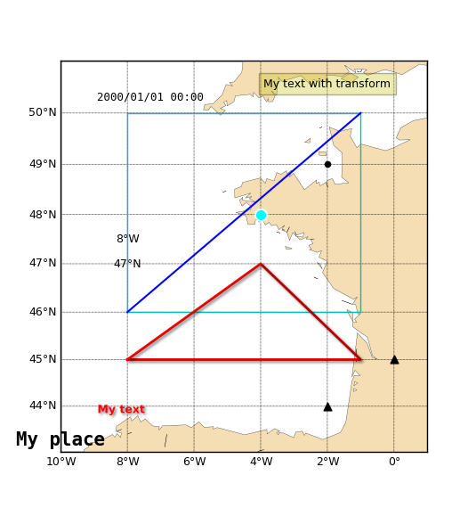
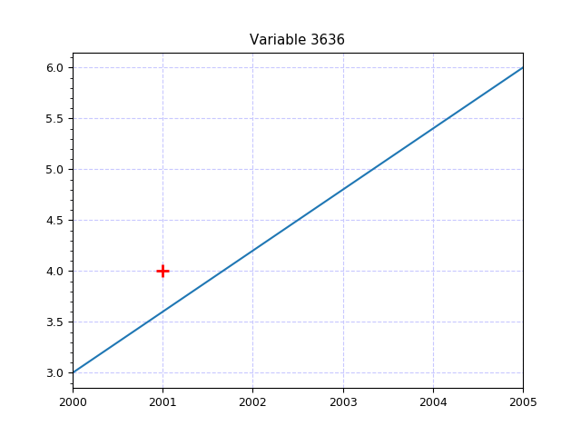

3.5.3.3. test_plot_core_add_things.py – Test add_point() and similar Plot methods¶


"""Test :func:`~vacumm.misc.plot.Plot.add_point` and similar :class:`~vacumm.misc.plot.Plot` methods"""
# Imports
from vcmq import MV2, code_file_name, map2, curve2, create_time
figfile = code_file_name(ext=False)+'_%i.png'
# Create a map with projection
m = map2(lon=(-10,1), lat=(43,51), res='l', show=False, proj='merc')
# Add a point
m.add_point(-4, 48, color='cyan', glow=True, size=50)
m.add_point([0, -2], [45, 44], color='k', marker='^', size=40)
# Add text
m.add_text(0.1, 0.1, 'My text', color='r', shadow=True, weight='bold')
m.add_text(-2, 50.5, 'My text with transform', transform='data', ha='center',
bbox=dict(facecolor='y', alpha=.3))
m.add_lon_label(-8, 47.5, -8, va='center', ha='center', transform='data', fmt='%g')
m.add_lat_label(-8, 47, 47, va='center', ha='center', transform='data')
m.add_time_label(.1, .9, '2000')
# Add place
m.add_place(-2, 49, 'My place', text_family='monospace', text_size=15)
# Add lines
m.add_line([-8, 46, -1, 50], color='b')
m.add_lines([-8, -1, -4, -8], [45, 45, 47, 45], color='r', linewidth=2, shadow=True)
m.add_box([-8, 46, -1, 50], color='c')
m.savefig(figfile%0)
m.close()
# Test with dates
var = MV2.array([3, 6])
time = create_time(['2000', '2005'], units='years since 2000')
var.setAxis(0, time)
c = curve2(var, show=False)
c.add_point('2001', 4, marker='+', size=100, linewidth=2)
c.savefig(figfile%1)
m.close()